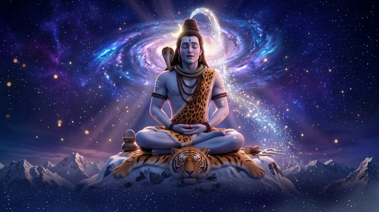
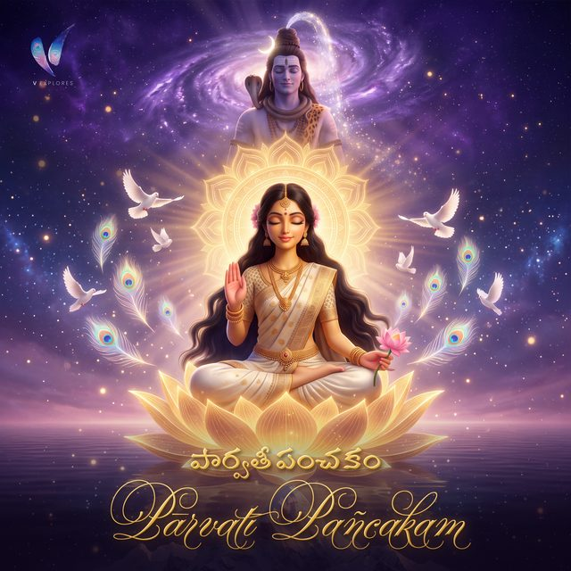

FIRST SHORT FILM · IN PRODUCTION
The Great Friendship
Begun with gratitude for the people who helped along the way. Friendship is the first chapter; gratitude, courage and hope are the wider journey.
Open the title sequence ↗V EXPLORES / VENKAT’S CREATIVE HUB
Following the Flow · V sounds like We
THE CREATIVE WORLD OF VENKAT
Exploring motion graphics and cinematic transitions.
I create animated short films and original devotional music rooted in real emotions—stories of gratitude, courage and hope, made to lift people up.
A BREATH BETWEEN STORIES / 01
A little warmth. A fresh perspective.
THE BELIEF BEHIND EVERYTHING
“I always believe: it’s not about how others see you. It’s about how you see yourself.”— Venkat
I hike. I find inspiration in the outdoors.
These little worlds carry that spirit into the page.
The stories are not limited to one theme. Each film begins with a human feeling and looks for a way forward.
Begun with gratitude for the people who helped along the way. Friendship is the first chapter; gratitude, courage and hope are the wider journey.
Open the title sequence ↗A future short film about hope and suicide prevention—created to remind people that a difficult moment is not the end of their story.
A story still taking shape.PARVATI PANCHAKAM · BIKE LIGHT-STUNT
A little courage. A little wonder. Keep moving.
Experiences I’ve already lived.
Feelings I carry into the stories I create.
Two finished devotional songs and their animated lyrical films. Nothing plays until you choose it.

The verified September 17 final recording.

The locked September 21 film/edit master.
FOLLOWING THE FLOW / 03
A moment to breathe, before the next adventure.
GOOD COMPANY / AROUND THE FIRE
A warm evening. A familiar song. Room for everyone.
SHIVA PANCHAKSHARI · CAR LIGHT TRANSITION
A familiar feeling can take you somewhere new.
IMAGINED IN MOTION / TRACKSIDE
A little focus. A little freedom. A new line to follow.
I believe art has no fixed form. It can become whatever a story needs to come alive.
So I let the story choose its medium.
Sometimes, it becomes an animated short film. Sometimes, a devotional song, a lyrical video, a melody—or a few words that stay with you.
I create and shape these stories, from the first idea to the final cut. I learn and use the tools each story needs, including AI, while making the creative choices that give it its identity. Every frame, every note, every word is chosen with care. Even this page is part of that process.
Every story here grows from something lived: a feeling, a difficult season, or a lesson life took its time to teach.
Beneath them all is one belief:
“I always believe: it’s not about how others see you. It’s about how you see yourself.”
If something here helps you stand a little taller, or inspires one act of kindness, then the story has done its job.
Let’s explore.
A thought becomes a beat; the beat becomes a shot; the shot earns its place in the film.
Blender, DaVinci Resolve, Adobe After Effects and Creative Cloud shape the moving image.
Artlist, ElevenLabs and carefully selected AI utilities help realize the vision; every result is reviewed and refined.